Windows infrastructure · IT support lab
Windows Active Directory Lab
An isolated VMware environment built to practise Windows domain administration and common support tasks. I configured Active Directory, DNS, Group Policy, role-based file access and a small PowerShell user- provisioning workflow, then documented what was tested and what the retained evidence can prove.
01 Environment
One domain controller and one client on an isolated host-only network.
The lab used fictional users and a VMware host-only network with no default gateway. It was designed for controlled learning rather than production use or internet-facing services.
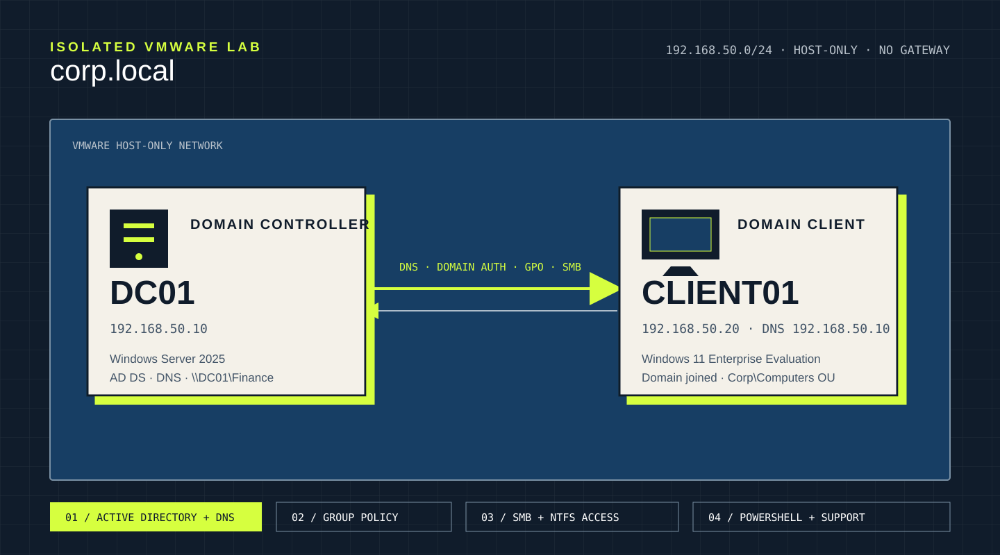
DC01 provided AD DS, DNS and the Finance share to domain-joined CLIENT01.02 Configuration
Identity, policy and file access were configured as connected parts of one small domain.
Active Directory
Created the corp.local forest, an OU structure for users, groups, computers and service accounts, and fictional role-based accounts.
DNS and domain join
Configured CLIENT01 to use DC01 as DNS, verified name resolution and joined the Windows 11 client to the domain.
Group Policy
Linked GPO-Client-Security-Baseline to the Computers OU and tested the policy that hides the last signed-in user.
SMB and NTFS
Assigned Finance access through GG_Finance, tested permitted read/write activity and tested denial for a non-member.
PowerShell
Created a parameterised script for one-user provisioning and department-group assignment, then tested it with Daniel Reed.
Troubleshooting
Investigated and repaired a broken computer-domain secure channel, recording the checks, resolution and verification.
03 Evidence & outcomes
What was demonstrated, with the evidence boundary stated beside it.
| Area | Supported outcome |
|---|---|
| Domain controller | DC01, corp.local, 192.168.50.10 and DNS resolution are visible in retained evidence. |
| Directory structure | Corp OUs and the GG_Finance and GG_IT_Support global security groups are visible. |
| Client networking | CLIENT01 used 192.168.50.20, DNS 192.168.50.10, and reached and resolved DC01. |
| Group Policy | The baseline GPO appears in computer policy results and the sign-in screen shows “Other user”. |
| Finance access | NTFS entries, a successful folder-use test and an access-denied test were retained. User context comes from the documented test sequence. |
| PowerShell user | Get-ADUser shows Daniel Reed enabled with department IT. The selected screenshots do not independently show his group membership. |
| Secure-channel repair | The fault and successful repair were documented, but the selected public evidence does not include the secure-channel output. |
04 Retained screenshots
Configuration and test evidence from the completed environment.
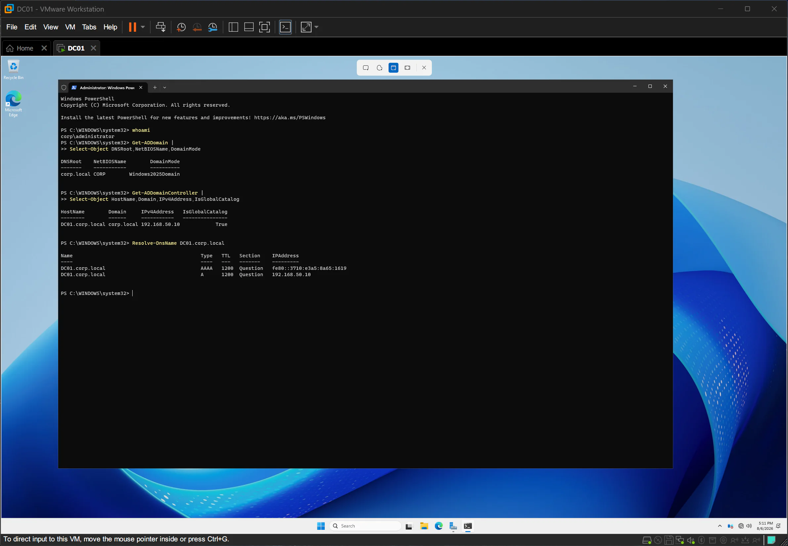
DC01, its domain, address and DNS resolution are visible.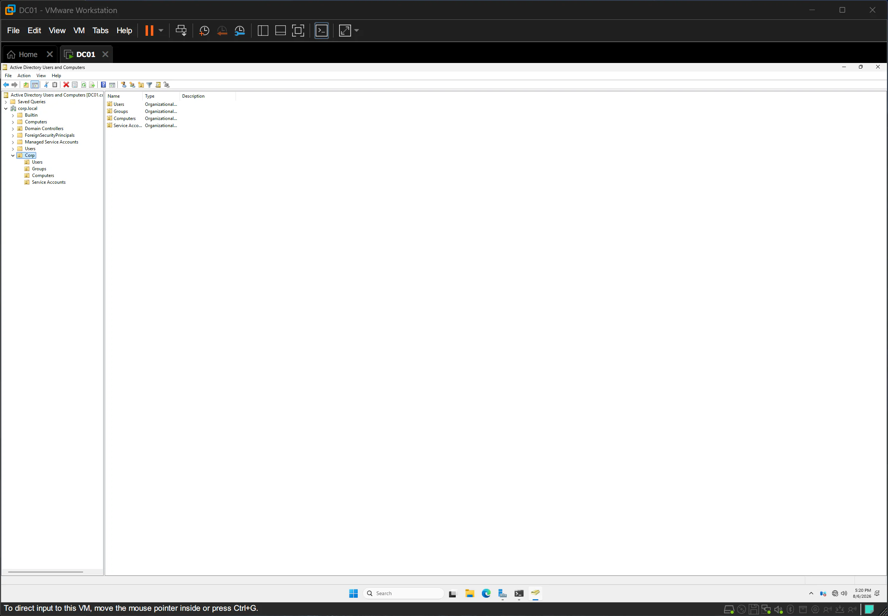
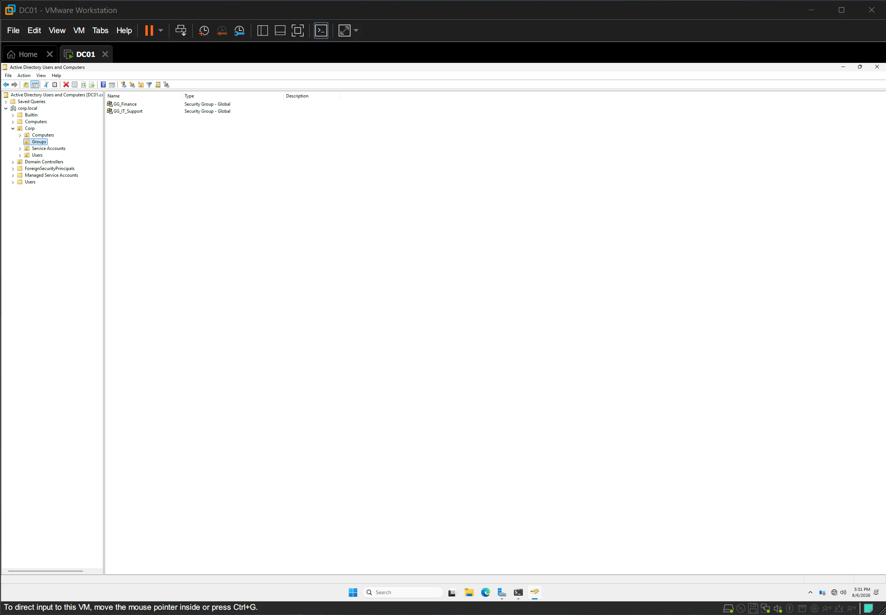
GG_Finance and GG_IT_Support are shown as global security groups.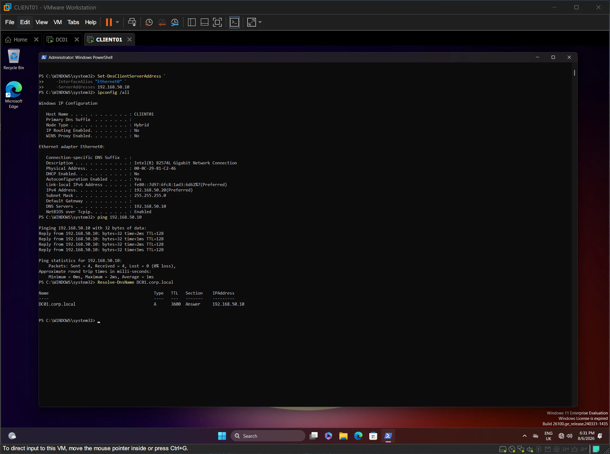
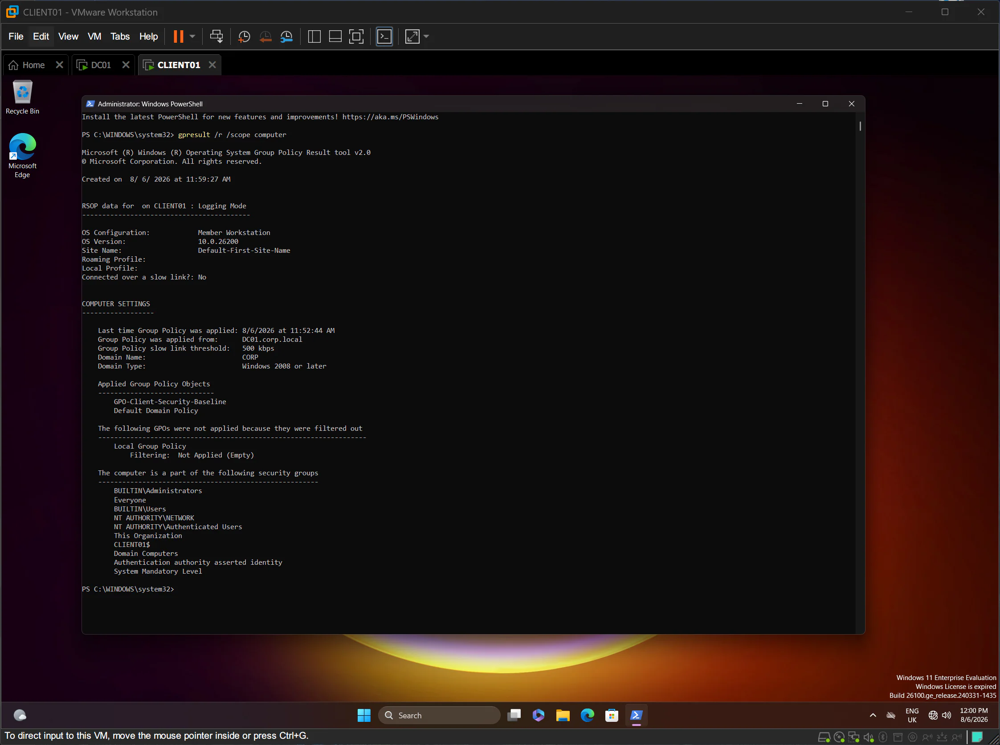
GPO-Client-Security-Baseline appears in the computer policy output.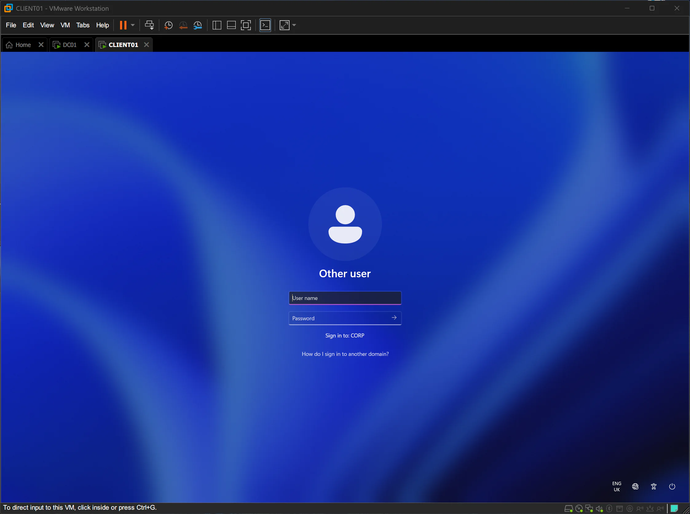
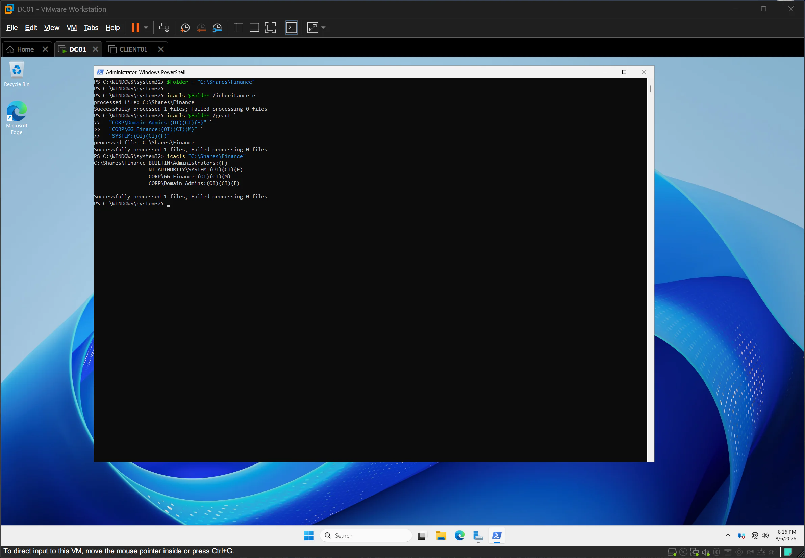
GG_Finance has Modify while administrators and SYSTEM retain Full Control.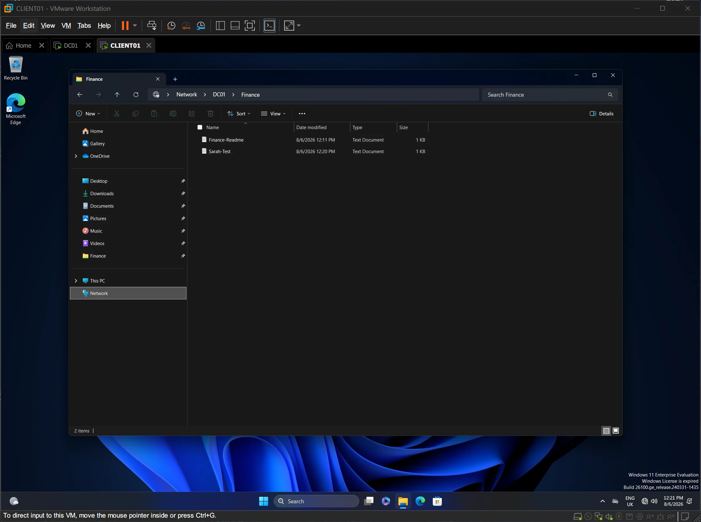
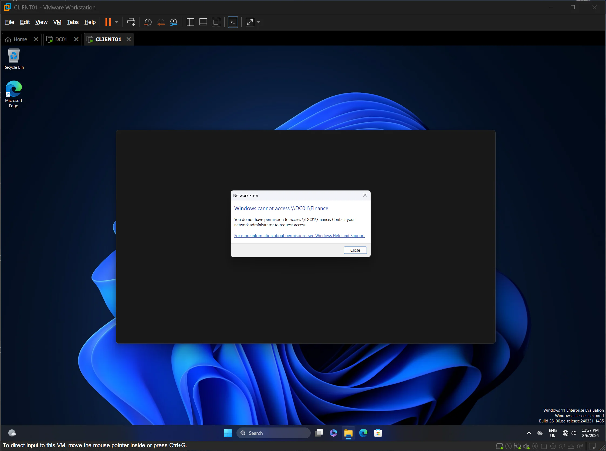
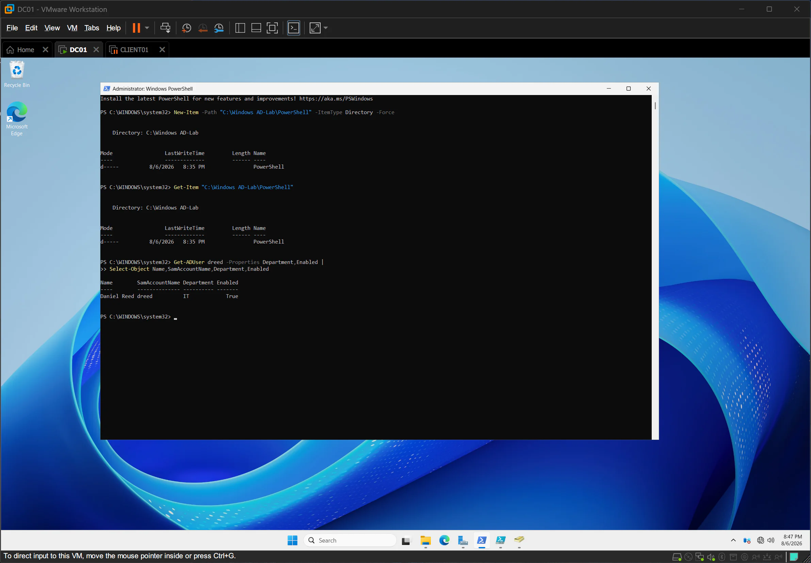
Get-ADUser independently shows Daniel Reed, department IT and an enabled account.05 Support incidents
Three short records connect symptoms, investigation, resolution and verification.
Broken secure channel
Checked DNS and client status, repaired the trust from elevated PowerShell, restarted and documented the successful follow-up test.
Read incidentFinance permissions
Verified group-based Finance access using SMB and NTFS, including one permitted account and one deliberately denied account.
Read incidentUser provisioning
Tested a parameterised user-creation workflow, then removed the original hard-coded password from the public script.
Read incident06 PowerShell & security
The useful automation remains public; the exposed lab password does not.
The original tested script accepted a first name, last name, username and either IT or Finance as the department. It created the account in the Corp Users OU and selected the matching role group. Before publication, I replaced the hard-coded lab password with a secure interactive prompt.
07 Limitations & skills
A practical learning lab with a deliberately honest scope.
- 01The environment was an isolated two-VM lab, not a production or commercial deployment.
- 02The provisioning script was tested with one fictional user and two supported departments.
- 03CSV import, logging, rollback, backups, auditing and formal change control were outside scope.
- 04The selected evidence does not independently display every documented user context or result.
Windows Server 2025
Active Directory
DNS
Group Policy
Windows 11
SMB and NTFS
PowerShell
VMware
Access control
Troubleshooting
Technical documentation
The project demonstrates that I can build a small Windows domain, verify individual controls, troubleshoot a fault and explain the boundary between retained evidence and a documented test result.
Return to all projects